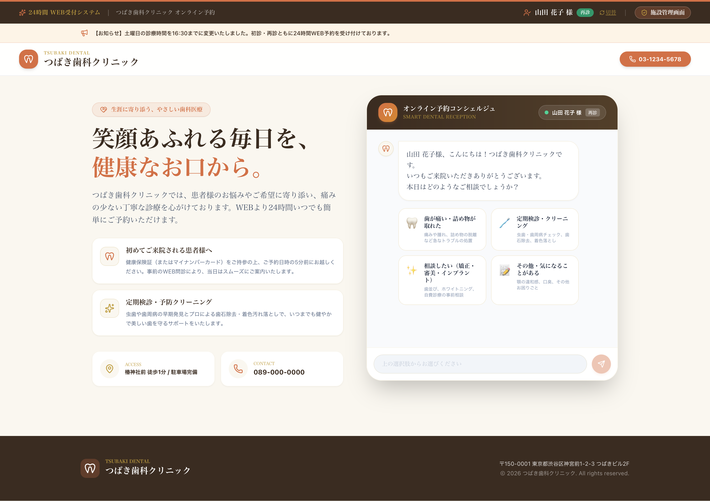
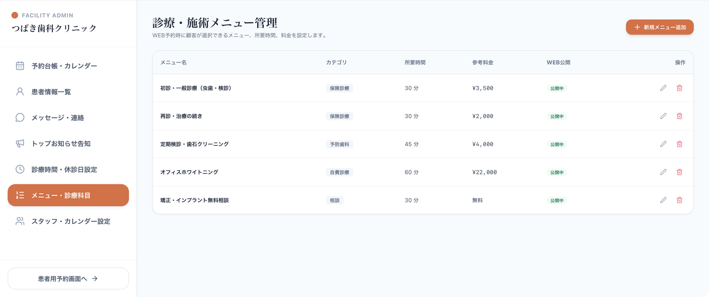
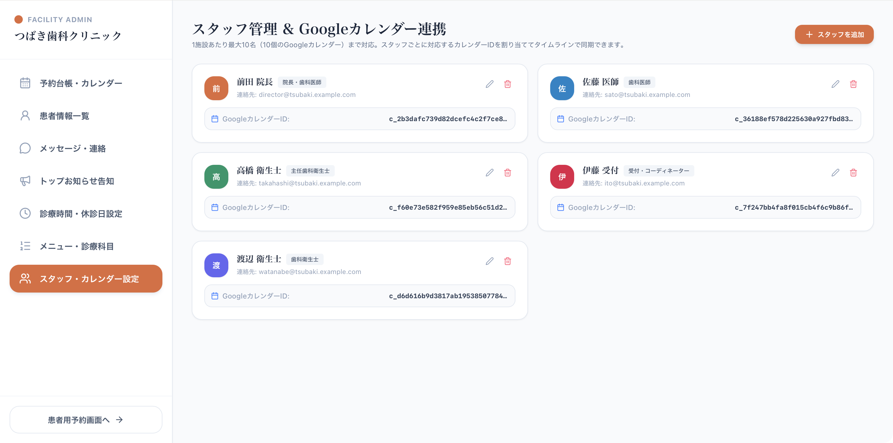
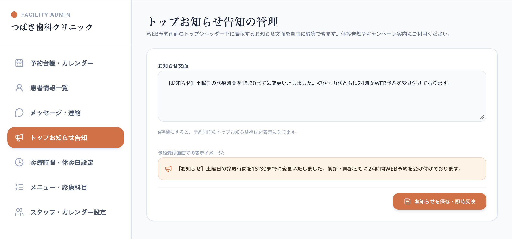
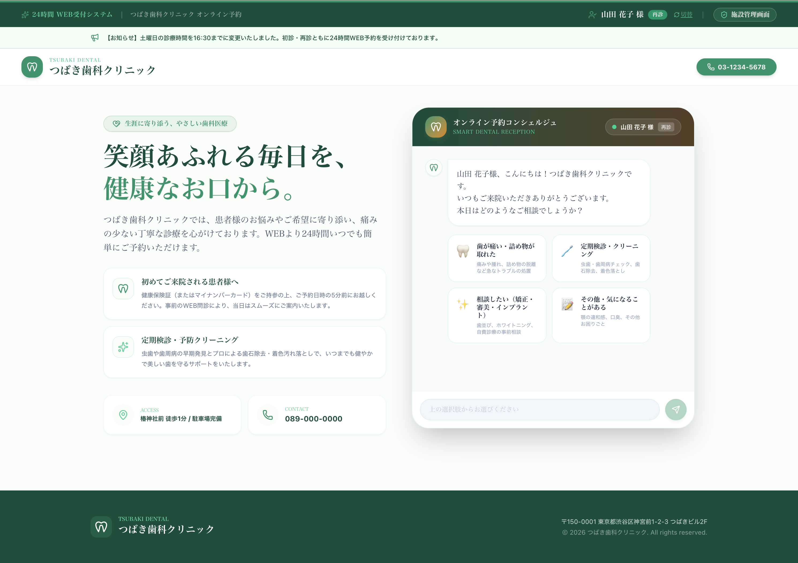

患者様には即レスの心地よさを。 スタッフにはゆとりと確実さを。
LINE・スマホで簡単ログイン。AIチャットで症状を伝えるだけで、空き枠を自動提案して即時予約完了。 スタッフ別タイムラインカレンダーと電子カルテ連携で、毎日の受付・予約管理のストレスをゼロにします。
幅広い予約・顧客管理に柔軟対応


カルテ連携 & 自動照合
既存の電子カルテからスムーズに移行
スマホカレンダー自動登録
うっかり忘れ・ドタキャンを防止
予約体験と受付業務を、もっと心地よく、もっと確かに。
患者様・お客様の予約ストレスを解消しながら、スタッフの煩雑なスケジュール調整・連絡業務を劇的に効率化します。
迷わない、待たせない。
即レスチャット予約
LINEやメールでサッとログイン。チャットで症状や希望を選ぶだけでAIが空き枠を自動検索。タップ一つで予約が完了し、スマホのカレンダーに即連携されます。
個別タイムラインと
直感ドラッグ＆ドロップ
医師・衛生士・スタッフそれぞれの予定を一画面で俯瞰。Webからの予約はリアルタイムで反映され、予約変更もドラッグ＆ドロップで一瞬。画面から直接連絡メールも送信できます。
業種を選ばない
自由なメニュー＆時間設定
歯科医院はもちろん、接骨院・サロン・パーソナルジムなど、メニュー名・所要時間・料金・独自休診日を自由に設定。AI提案ロジックも運用の形に合わせて自動最適化されます。
患者様・お客様の体験フロー
アカウント連携から予約完了、当日のリマインドまで。ストレスを感じさせないスムーズな設計です。

多彩なログイン＆カルテ照合
LINE・Apple・Google・メールに対応。「新患」「再診」を選んでワンタップログイン。カルテ番号や登録情報と自動照合されます。

即レスAIチャットで症状選択
「歯が痛い」「定期検診」「相談」など、分かりやすいカードからタップして問診。自由記述にも自然に応答し、適切な所要時間を自動判定。
空き枠タップで即時予約完了
リアルタイムの空き枠候補がチャット内に一覧表示。希望の枠をタップするだけで即確定。仮予約待ちの煩わしさがありません。
完了メール ＆ 通知リマインド
予約完了メールが即時送信され、スマホのカレンダーにワンタップで登録。前日・当日の通知で「予約のうっかり忘れ」を確実に防ぎます。
医院・店舗の運営を力強く支える管理機能
日々のスケジュール調整からスタッフ管理、顧客カルテのインポート、お知らせ更新まで。現場スタッフが迷わず使える直感UIにこだわりました。
スタッフ別 個別タイムライン
院長・医師・衛生士・受付それぞれの空き状況を縦軸時間・横軸スタッフで一元表示。日別・週別・月別を瞬時に切り替え可能。
リアルタイム反映 ＆ D&D
Webから入った予約は即座に画面へ反映。日時の変更やスタッフの変更も、マウスのドラッグ＆ドロップだけで完了します。
同一画面からメール/LINE通知
予約変更や連絡事項を、カレンダーや患者詳細画面から直接メール・LINEで送信。別ソフトを開く手間が一切ありません。
電子カルテデータ インポート
Web新規患者はもちろん、既存の電子カルテやレセコンのデータをインポート。予約後のカルテ作成・照合が驚くほどスムーズに。
チャットメッセージ自由更新
患者様側のチャット画面で案内する挨拶文や質問文を、いつでも管理画面から自由に編集・更新できます。
診療時間・休診日の簡単設定
曜日別の診療時間、祝日自動判定、夏季・年末年始・院内研修などの独自休診日を設定。AI提案から自動除外されます。
診療・施術メニュー管理
初診・再診・各種診療メニューごとに所要時間、参考料金、WEB公開/非公開を管理。患者への提案精度を高めます。
担当制切替 ＆ カレンダー連携
担当者指名制の有効/無効切替、新規・フリー用の「初回受付カレンダー」指定、再来客の自動担当者振り分けに対応。
選べる3つの業種カテゴリーで、
管理画面・予約画面の表現を自動最適化
業種に合わないシステム用語は、顧客体験や現場の使いやすさを損ないます。CONNECTでは、設定から業種カテゴリーを選択するだけで、予約画面・管理画面・通知文の用語が自動で切り替わります。
医療・歯科・クリニック
「患者様」「診療」「初診・再診」「カルテ番号」「問診」などの表記へ最適化
サロン・エステ・美容
「お客様」「施術」「初回来店・再来」「カウンセリング」「スタイリスト」などへ最適化
一般店舗・サービス
「お客様」「ご予約」「新規・リピート」「担当スタッフ」「プラン」など標準サービス用語へ最適化
| 項目 | 🏥 医療・歯科 | 💆♀️ 美容サロン | 🏢 一般店舗 |
|---|---|---|---|
| 呼称 | 患者様 | お客様 | お客様 |
| 予約内容 | 診療・治療 | 施術・コース | ご予約・利用 |
| 利用区分 | 初診 / 再診 | 初回 / 再来 | 新規 / リピート |
| 対応者 | 担当医・衛生士 | 担当施術者 | 担当スタッフ |
| 事前確認 | 症状問診 | カウンセリング | ご要望・相談 |
※設定変更後、すべてのチャット案内文・予約確認メール・台帳表示に即時反映されます。
再来客は担当カレンダーへ自動登録。
担当制のON/OFF ＆ 初回受付カレンダーも自由自在。
「いつも同じ先生・スタッフが対応する」「初回やフリー客は受付用カレンダーに集約する」など、現場の運用ルールに合わせて最適なカレンダーへ自動ルーティングします。

再来客の担当者指定 ＆ 自動追加
お客様一覧画面で患者様・お客様ごとに担当スタッフを指定可能。指定された顧客がWebから再予約すると、自動的にその**担当スタッフのGoogleカレンダーに予定が追加**されます。

担当制ON/OFF ＆ 初回受付カレンダー
スタッフ管理画面から「担当者指名制」自体の有効/無効をワンクリック切替。新規顧客や担当が決まっていない方の予約を登録する専用の「初回受付カレンダー」も自由に割り当て可能です。
実際の管理画面・患者画面
シンプルで誰でも直感的に扱える美しいUIデザイン。画像をクリックして拡大してご覧いただけます。
予約台帳・タイムライン管理
スタッフ別のタイムラインと日別・週別切替、Googleカレンダー同期。
リアルタイム空き枠提案
AIが空き枠を検索してボタン表示。タップするだけで即確定。
患者認証 ＆ カルテ照合
LINE/Apple/Google/メール対応。新患・再診もワンタップ認証。

患者情報一覧 ＆ 検索
受診履歴、VIP/一般ランク、電子カルテデータの一括インポート対応。

診療時間 ＆ 独自休診日設定
祝日連動、夏季・年末年始休暇などの設定でAI提案から自動除外。

診療・施術メニュー管理
カテゴリ、所要時間、料金、WEB公開の切り替えを自由に管理。

スタッフ管理 ＆ カレンダーID
スタッフごとに対応するGoogleカレンダーIDを割り当てて同期。
顧客カルテ ＆ 担当スタッフ指定
再来客の予約を指定担当者のGoogleカレンダーへ自動登録。
担当制ON/OFF ＆ 初回受付カレンダー
指名制運用の切替と、新規顧客・担当未設定客の割当カレンダー設定。

トップお知らせ告知の管理
予約画面ヘッダーのお知らせ文章をいつでも即時反映。

医院に合わせたカラー展開
グリーン、ローズ、スレート、パープル、ブルーなど自在に調整可能。
3つの業種カテゴリー設定で、多彩な対面サービスの予約・顧客管理にフィット
設定画面で「業種カテゴリー」を選ぶだけで、患者様/お客様などの呼称や診療/施術/ご予約といった表現が自動で最適化。メニューやスタッフ枠を整えれば、様々な業種ですぐに運用開始できます。
歯科医院・クリニック
初診・再診・定期検診
医師と歯科衛生士の担当分け、チェアー別の空き枠、電子カルテとの照合で受付業務の負担を大幅軽減。
接骨院・整骨院・鍼灸院
保険診療・自費整体
施術スタッフ別の空き枠管理やベッド枠管理。痛みの箇所や希望メニューをチャットで事前ヒアリング可能。
エステ・リラクゼーション
フェイシャル・ボディ・脱毛
施術コースごとの所要時間や部屋割り、カウンセリング枠の管理。上品で落ち着いたデザインで世界観を損ないません。
理髪店・美容室・ヘアサロン
カット・カラー・パーマ
スタイリスト別のシフトと予約枠の同期。セットメニューに応じた時間自動計算でブッキングを防止。
ネイル・アイラッシュサロン
オフあり/なし・アートコース
ネイリストごとの技術レベルに合わせた所要時間設定や、オフ有無による時間変動もチャットで自然にヒアリング。
パーソナルトレーニング
体験レッスン・個別指導
トレーナーとブースの空き状況をリアルタイム管理。体験レッスンの即時受付で入会成約率を最大化。
よくあるご質問
導入や設定に関する疑問にお答えします。
現在使っている電子カルテや顧客データを取り込めますか？
はい、CSV形式でのデータインポートに対応しております。既存の患者様・顧客データ（お名前、電話番号、カルテ番号、受診履歴など）を取り込むことで、導入初日からスムーズにご利用いただけます。
歯科医院以外のサロンや一般店舗でも違和感なく使えますか？
はい、可能です。管理画面で「医療・歯科・クリニック」「サロン・エステ・美容」「一般店舗・サービス」の3カテゴリーから業種を選択でき、呼称（患者様/お客様）や利用区分（初診・再診/初回・再来/新規・リピート）などの表現がシステム全体で自動最適化されます。
スタッフの担当制や、新規・フリー客のカレンダー振り分けは可能ですか？
はい、対応しています。顧客一覧で担当スタッフを紐づけておくことで、再来予約時にそのスタッフのGoogleカレンダーへ自動登録されます。また、そもそも担当制を行わない運用のための「担当者指名制の無効化」や、新規客・フリー客を割り当てる「初回受付カレンダー」の設定も簡単に行えます。
Googleカレンダーとの同期はどのように行われますか？
スタッフごとに個別GoogleカレンダーIDを設定可能です。システム側で予約が入るとGoogleカレンダーへリアルタイムに反映され、スタッフ個人のスケジュール管理ともスムーズに連携します。
導入前に実際の画面やデモを体験できますか？
はい、オンラインにて実際の操作画面をご覧いただけるデモや、テスト環境のご案内を行っております。下記のお問い合わせフォームよりお気軽にお申し付けください。
予約業務のゆとりを、あなたの医院・サロンに。
「自院の運用に合うか相談したい」「実際の操作感を試したい」など、お気軽にお問い合わせください。専門スタッフが丁寧にご案内いたします。